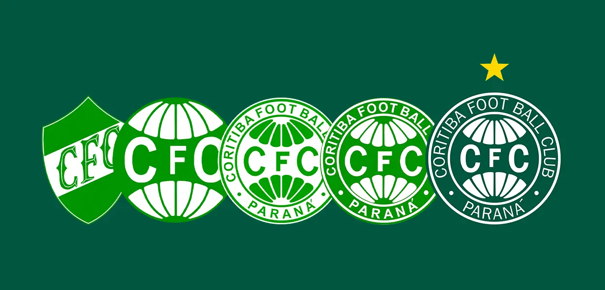
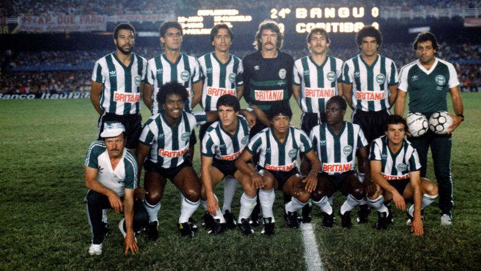
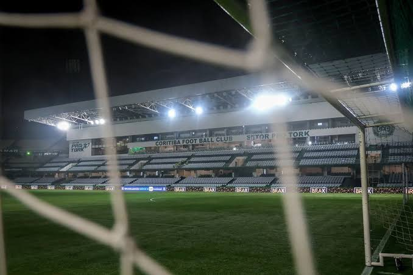

Sobre o Coxa
O Coritiba Foot Ball Club, conhecido popularmente como Coxa, é um dos clubes mais tradicionais do futebol brasileiro. O clube foi fundado em Curitiba, capital do Paraná, e possui as cores verde e branca.
O Coritiba é reconhecido por sua grande torcida, sua história no futebol paranaense e por representar o estado em importantes competições nacionais.
O principal estádio do clube é o Couto Pereira, localizado em Curitiba. O estádio é um dos lugares mais conhecidos do futebol paranaense e recebe jogos importantes do Coxa.

História do Coritiba
O Coritiba Foot Ball Club foi fundado em 12 de outubro de 1909, sendo um dos clubes mais antigos do estado do Paraná. Sua criação está ligada à influência de imigrantes alemães que viviam em Curitiba.
Ao longo dos anos, o clube se tornou uma das principais equipes do futebol paranaense. O Coritiba conquistou diversos Campeonatos Paranaenses e construiu uma história marcada por grandes jogos e jogadores.
Um dos momentos mais importantes da história do clube aconteceu em 1985, quando o Coritiba conquistou o Campeonato Brasileiro. Essa conquista colocou o clube entre os campeões nacionais do futebol brasileiro.

Importância para o Paraná
O Coritiba possui grande importância para a história esportiva do Paraná. O clube ajudou no desenvolvimento do futebol no estado e representa Curitiba em competições nacionais.
Além do esporte, o Coxa também possui importância cultural para seus torcedores. Muitas famílias acompanham o clube há várias gerações, criando uma forte relação entre o time e a população.
O Couto Pereira é outro símbolo importante. O estádio recebe milhares de torcedores e faz parte da história e da paisagem esportiva de Curitiba.

Curiosidades
Fundação
O Coritiba foi fundado em 12 de outubro de 1909, em Curitiba.
Campeão Brasileiro
O clube conquistou o Campeonato Brasileiro em 1985, um dos maiores títulos de sua história.
Couto Pereira
O Estádio Couto Pereira é a casa do Coritiba e um dos estádios mais tradicionais do Paraná.
Maior do Estado
O Coritiba possui uma das histórias mais importantes do futebol paranaense, com muitos títulos estaduais.
Verde e Branco
As cores verde e branca são símbolos tradicionais do clube e aparecem no uniforme e no escudo.
Referências
Site oficial do Coritiba Foot Ball Club.
Informações históricas sobre o futebol paranaense.
Dados sobre a história e os títulos do Coritiba.